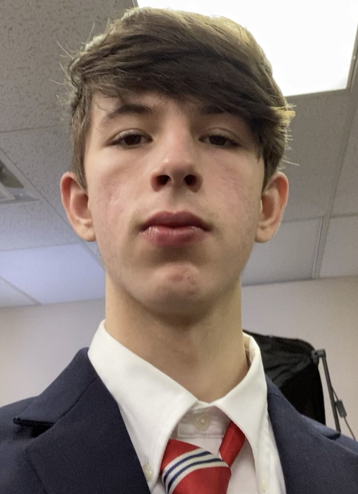

 Hello, my name is Neil, and I am an undergraduate at Marshall University. My passions include music, learning, and Computer Science all of which I have been able to pursue at Marshall University. At my time at Marshall, I have been fortunate enough to become actively involved with my department through research and other opportunities.
My main areas of research are machine learning (ML) and human computer interaction (HCI). I have worked on multiple projects and publications in these fields, and hope to continue in the upcoming years.
Marshall University
College of Engineering and Computer Science
Bachelor's of Science in Computer Science (Expected May 2025)
loftus6@marshall.edu
(304) 972 9742